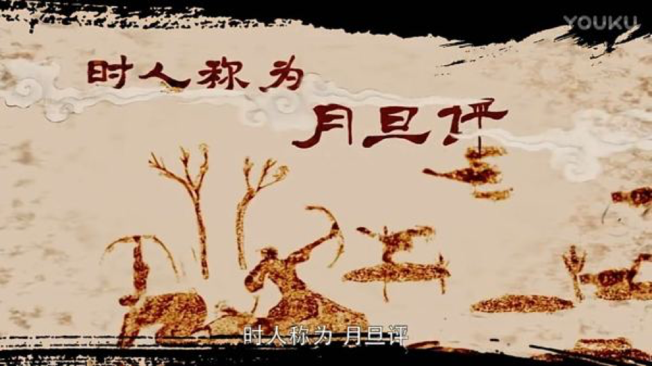

月旦评：月旦评，东汉末年由汝南郡人许劭兄弟主持对当代人物或诗文字画等品评、褒贬的一项活动，常在每月初一发表，故称“月旦评”。无论是谁，一经品题，身价百倍，世俗流传，以为美谈。因而闻名遐迩，盛极一时。月旦评影响深远，孔尚任《桃花扇•修札》:“舌唇才动，也成月旦春秋。”简单来说，月旦评就是在东汉末年那一时期，由许劭兄弟组织发起的对当时人物学子等关于学识品性的评价，同时也受到了世人极大的认可，而造成很多人都会渴求得到二人的评价
在最近的热播剧《大军师司马懿之军师联盟》中，这一件在当时社会具有极高逼格的事—“月旦评”也是剧集的第一次高潮。

初赛日期：9月2日
初赛地点：群组公布
初赛赛制：
本次初赛赛制由两阶段组成，分别为时事评论和话题辩论。在时事评论阶段，此阶段由三组关键词组成，是属于最近生活中饱受关注或受争议较多的话题。三组关键词给选手，选手选择一组词组任意展开自己的阐述和观点，万变不离其宗，本次活动，观点奇葩是我们的最终目标。在话题辩论阶段，此阶段有两组话题组成，选手任选一个话题，选择正反方，阐述自己的观点，并在阐述结束后接受评委的问答，即可结束初赛。 两个阶段的话题会在所有选手报名成功之后在群组中公布，没有对错，只有选择，IU奇葩说要找的奇葩，是你吗？